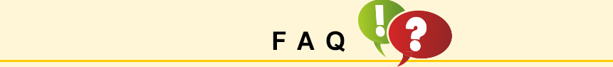

| 如何判斷應該參加學術組或是一般訓練組？ | |
| 如果您計畫出國留學深造或接受高等教育，應選擇學術組雅思考試。 如果您計畫非學術類培訓，工作或移民到英語國家，應選擇一般訓練組雅思考試。 |
| 身分驗證資料：護照過期，遺失〈送簽證換護照〉或通行證不行嗎？ | |
| 考生在筆試和口試入場前均須出示與報名時一致的護照，不符證件的考生將有可能不能參加考試，亦不得更改考期及退費。若護照於考試前有更換，請於五日前將新護照影本繳交至考試中心，考試當天須持新護照才得以入場應試，若要辦理簽證建議要先規劃其他適合時間。 |
| 報名後要能更改考試組別/考試場地或是退考嗎？ | |
| 建議您於考試五週前與報名的考試中心聯繫。更改費用依考試中心規定為主。 |
| 考試攜帶物品注意事項 | |
考試當日，您需要攜帶：
|
| 如何保證考官給每個考生的成績是公平的？考官之間是否有國籍差別？ | |
| 所有雅思考官都是英語為母語的專業人士，也都接受全面嚴格的培訓、監督考核機制定期對他們的評分進行監督，所以考官國籍並不會影響其專業度。為了確保公平，所有考官都是基於考生在考試當日的表現，依據同樣的評分標準評定的。另外，雅思考試有系統的程式對一定比例的考卷進行二次評分。 |
| 若考試當天無法出席，該如何處理？ | |
| 考生無法辦理退費或是延期。但若考生因故無法出席考試，需於考試日期起(含考試日期)五日內，出俱載有考試當天日期之證明文件正本(如醫師證明)予考試中心，證明文件需清楚註明不克出席之症狀及原因。 |
| 我可以申請寄送幾份免手續費額外成績單？ | |
| 考生在報名考試時可填寫至多五所學校或機構，這五份成績單毋須手續費用，將由考試中心寄出，但考生需支付郵寄費用。雅思考試成績有效期為考試日期後2年，有效期過後將無法提供額外成績寄送服務。為避免不慎遺失考試成績單，建議您收到成績單後立即複印數份備用。 |
| 申請複查後，成績會下降嗎？複查服務的權威性是如何保證的？ | |
| 雅思考試擁有高標準的品質監控體系，作為最高標準的評分服務，成績複查可以確保考生的英語能力得到精確的評判，均由劍橋大學英語考試院統一考核認證。複查結果有以下三種：考生成績升高，不變，或者降低。如果複查後成績升高，會將提供考生新的成績單和複查結果通知信，如果複查後成績不變或者降低，會將退還考生原始成績單正本，並出俱復查結果通知信。 |